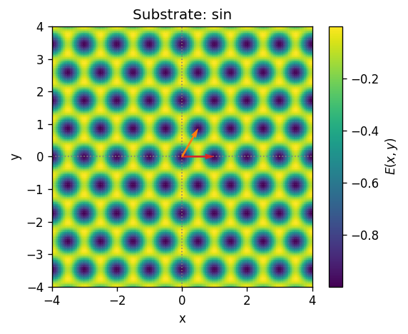
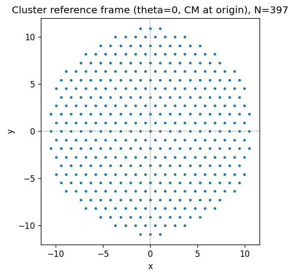
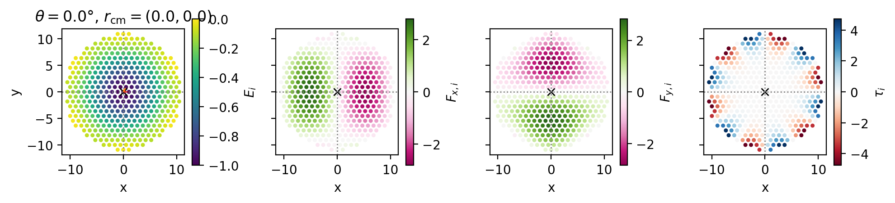
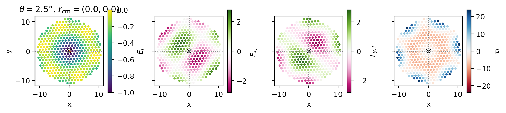
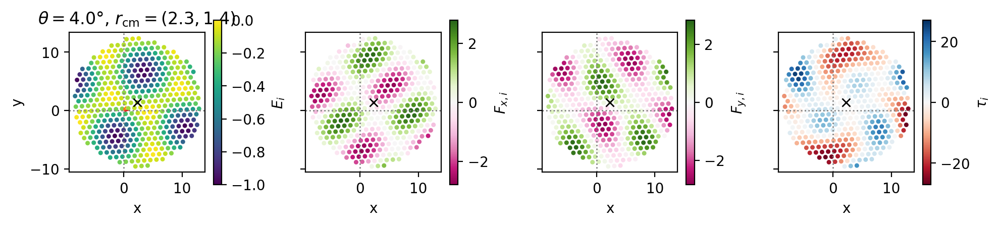
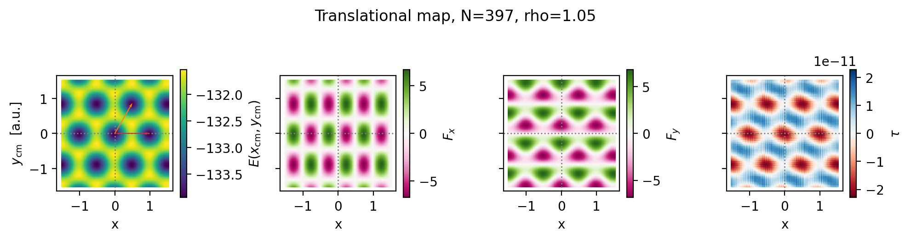
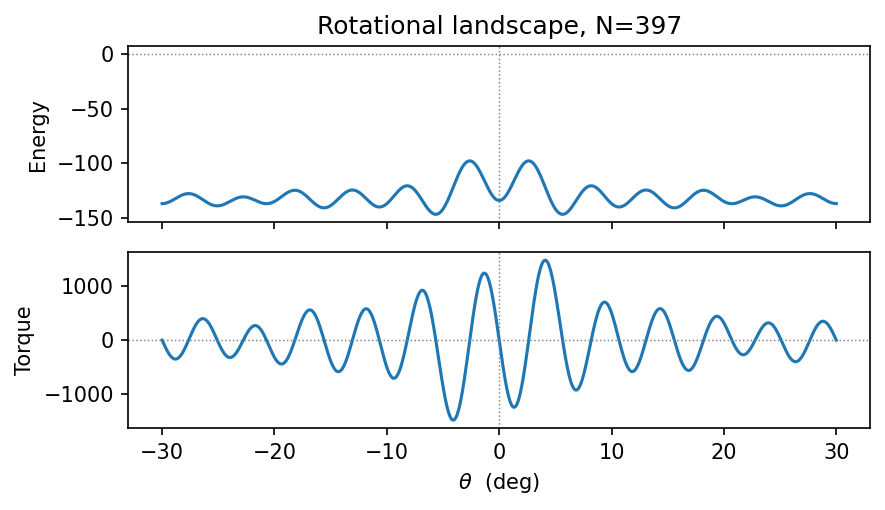
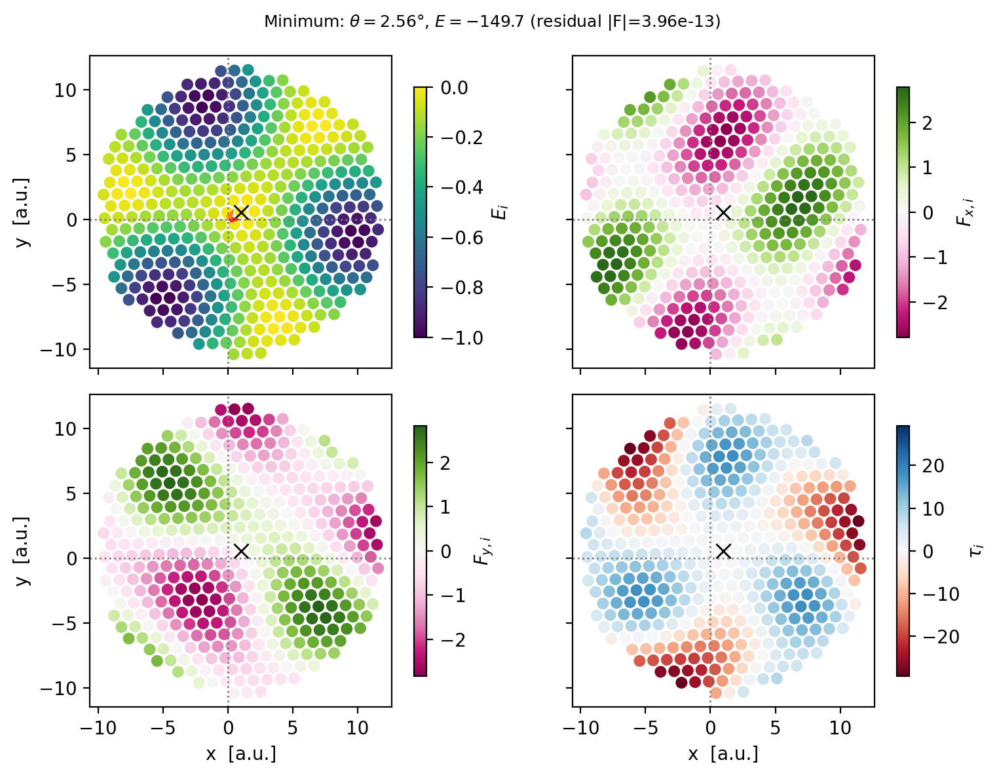

Cluster on a substrate
Having defined a cluster and a substrate separately, we now put them together. In this rigid model the interaction is simple: evaluate the substrate energy at each particle position, then sum to get the total energy, force on the CM, and torque around the CM.
This notebook covers:
System definition (substrate + cluster parameters)
Snapshot inspection at fixed (theta, pos_cm)
Translational energy landscape E(x_cm, y_cm) at fixed orientation
Rotational landscape E(theta) at fixed CM
Roto-translational landscape: global minimum search
[1]:
import numpy as np
from numpy import sqrt
import matplotlib.pyplot as plt
from matplotlib.colors import Normalize
from flake.substrate import (calc_matrices_bvect, substrate_from_params,
get_ks)
from flake.cluster import rotate, cluster_from_params
from flake.maps import translational_map, rotational_map, rototrasl_map
from flake.plot import (get_brillouin_zone_2d, plot_BZ2d,
plot_lattice_vectors, plt_cosmetic)
System definition
We define a sinusoidal triangular substrate and a circular cluster on top. The mismatch ratio rho controls the ratio of cluster to substrate lattice spacing. rho=1 gives a fully commensurate contact (maximum friction); rho != 1 introduces a mismatch (the first step toward superlubricity).
[8]:
rho = 1.0 + 1/20 # rho=1: commensurate contact. Try rho=1+1/20 for mismatch.
ks = get_ks(1, 3, 4./3., 0.) # triangular substrate wave vectors
params = {
# --- substrate (sinusoidal, triangular symmetry) ---
'sub_basis': [[0, 0]],
'epsilon': 1,
'well_shape': 'sin',
'ks': ks,
# --- cluster (triangular lattice, scaled by rho) ---
'a1': list(rho * np.array([1., 0.])),
'a2': list(rho * np.array([0.5, -sqrt(3.)/2.])),
'cl_basis': [[0., 0.]],
'cluster_shape': 'circle',
'N1': 20, 'N2': 20,
}
[9]:
# Substrate lattice matrix (needed for BZ overlay and fractional-coord grids).
# For the sinusoidal substrate we use the underlying triangular lattice b1, b2.
u, u_inv = calc_matrices_bvect([1, 0], [1./2., sqrt(3.)/2.])
S = u_inv.T # rows are b1, b2
bz_kw = {'ls': '--', 'color': 'gray', 'lw': 1, 'fill': False}
pen_func, en_func, en_inputs = substrate_from_params(params)
Substrate potential
Quick sanity check: plot the per-particle substrate energy on a 2D grid. Each bright spot is a potential well; particle positions at the minimum should coincide with these wells.
[10]:
side = 4.
nx = ny = 150
xx, yy = np.meshgrid(np.linspace(-side, side, nx),
np.linspace(-side, side, ny))
p = np.stack([xx.ravel(), yy.ravel()], axis=1)
en_sub, _, _ = pen_func(p, np.array([0., 0.]), *en_inputs)
fig, ax = plt.subplots(dpi=120, figsize=(5, 4))
sc = ax.scatter(p[:,0], p[:,1], c=en_sub, s=1, rasterized=True)
plt.colorbar(sc, label=r'$E(x,y)$', ax=ax)
if params['well_shape'] != 'sin':
plot_BZ2d(ax, get_brillouin_zone_2d(S), bz_kw)
plot_lattice_vectors(ax, S)
ax.set_xlim([-side, side])
ax.set_ylim([-side, side])
ax.set_xlabel('x [a.u.]')
ax.set_ylabel('y [a.u.]')
ax.set_title('Substrate: %s' % params['well_shape'])
plt_cosmetic(ax)
plt.tight_layout()
plt.show()

Cluster
[11]:
# cluster_from_params returns pos in the REFERENCE FRAME: CM at origin, theta=0.
# Rotation and translation are applied explicitly for display or static calculations.
pos = cluster_from_params(params)
N = pos.shape[0]
print('Cluster %s, N=%i, rho=%.3f' % (params['cluster_shape'], N, rho))
fig, ax = plt.subplots(dpi=120)
ax.scatter(pos[:,0], pos[:,1], s=5)
ax.set_title('Cluster reference frame (theta=0, CM at origin), N=%d' % N)
plt_cosmetic(ax)
plt.tight_layout()
plt.show()
Cluster circle, N=397, rho=1.050

Snapshots at fixed (theta, pos_cm)
Place the cluster at several (theta, pos_cm) configurations and inspect the per-particle energy, force components, and torque.
Physical expectation for commensurate contact (rho=1):
At theta=0, pos_cm=(0,0): all particles in wells, E ~ -epsilon per particle, force and torque ~ 0 (energy minimum).
Off-minimum: particles straddle well edges, forces point back toward minimum.
[12]:
for theta, cm in [(0., [0., 0. ]), # commensurate minimum
(2.5, [0., 0. ]), # slightly rotated
(4., [2.3, 1.4])]: # rotated + shifted
cm = np.array(cm)
pos_rot = rotate(pos, theta)
en, F, tau = pen_func(pos_rot + cm, cm, *en_inputs)
fig, axes = plt.subplots(1, 4, dpi=200, sharey=True, figsize=(10, 2.5))
axE, axFx, axFy, axTau = axes
s0 = 5
xy = pos_rot + cm
x0, x1 = xy[:,0].min() - 1., xy[:,0].max() + 1.
y0, y1 = xy[:,1].min() - 1., xy[:,1].max() + 1.
for ax, vals, label, cmap, vmax in [
(axE, en, r'$E_i$', 'viridis', None),
(axFx, F[:,0], r'$F_{x,i}$', 'PiYG', np.abs(F[:,0]).max()),
(axFy, F[:,1], r'$F_{y,i}$', 'PiYG', np.abs(F[:,1]).max()),
(axTau, tau, r'$\tau_i$', 'RdBu', np.abs(tau).max()),
]:
norm = Normalize(-1., 0.) if ax is axE else Normalize(-vmax, vmax)
sc = ax.scatter(xy[:,0], xy[:,1], c=vals, s=s0,
cmap=cmap, norm=norm, rasterized=True)
plt.colorbar(sc, ax=ax, label=label, shrink=0.8)
ax.plot(*cm, 'x', color='black', ms=6)
if params['well_shape'] != 'sin':
plot_BZ2d(ax, get_brillouin_zone_2d(S), bz_kw)
ax.set_xlim([x0, x1])
ax.set_ylim([y0, y1])
plt_cosmetic(ax)
plot_lattice_vectors(axE, S)
axE.set_title(r'$\theta=%.1f°$, $r_\mathrm{cm}=(%.1f,%.1f)$' % (theta, *cm))
for ax in axes[1:]:
ax.set_ylabel('')
plt.tight_layout()
plt.show()



Translational energy landscape
Scan the cluster CM over a 2D grid at fixed orientation (theta=0) and compute energy, force, and torque at each point.
For the sinusoidal substrate there is no unit cell, so we use a Cartesian grid (pos_cm_grid). For Gaussian/tanh substrates, use fractional coordinates via frac_x/frac_y and u_inv.
For a commensurate cluster the landscape has the full symmetry of the substrate and a barrier proportional to N (static friction scales with cluster size). For a mismatched cluster (rho != 1) the barrier is strongly suppressed.
[13]:
# Sinusoidal substrate: Cartesian grid is required (no unit cell).
xx_cm = np.linspace(-1.5, 1.5, 100)
yy_cm = np.linspace(-1.5, 1.5, 100)
pos_cm_grid = np.array([[x, y] for x in xx_cm for y in yy_cm])
trasl = translational_map(
pos, en_func, en_inputs, u_inv=None,
n_x=150, n_y=150,
pos_cm_grid=pos_cm_grid,
n_jobs=1,
)
pp = trasl['pos_cm']
enmap = trasl['energy']
Fmap = trasl['force']
taumap = trasl['torque']
print('E range: [%.4g, %.4g] barrier: %.4g' % (
enmap.min(), enmap.max(), enmap.max() - enmap.min()))
E range: [-133.9, -131.5] barrier: 2.399
[14]:
fig, axes = plt.subplots(1, 4, dpi=200, sharey=True, figsize=(10, 2.5))
axE, axFx, axFy, axTau = axes
s0 = 0.8
for ax, vals, label, cmap, symmetric in [
(axE, enmap, r'$E(x_\mathrm{cm}, y_\mathrm{cm})$', 'viridis', False),
(axFx, Fmap[:,0], r'$F_x$', 'PiYG', True),
(axFy, Fmap[:,1], r'$F_y$', 'PiYG', True),
(axTau, taumap, r'$\tau$', 'RdBu', True),
]:
vmax = np.abs(vals).max()
norm = Normalize(-vmax, vmax) if symmetric else None
sc = ax.scatter(pp[:,0], pp[:,1], c=vals, s=s0,
cmap=cmap, norm=norm, marker='s', rasterized=True)
plt.colorbar(sc, ax=ax, label=label, shrink=0.8)
if params['well_shape'] != 'sin':
plot_BZ2d(ax, get_brillouin_zone_2d(S), bz_kw)
ax.set_xlabel(r'$x_\mathrm{cm}$ [a.u.]')
plt_cosmetic(ax)
plot_lattice_vectors(axE, S)
axE.set_ylabel(r'$y_\mathrm{cm}$ [a.u.]')
for ax in axes[1:]:
ax.set_ylabel('')
plt.suptitle('Translational map, N=%d, rho=%.2f' % (N, rho), y=1.01)
plt.tight_layout()
plt.show()

Rotational energy landscape
Scan the cluster orientation at fixed CM position. The energy is periodic with the symmetry of the contact: for a triangular cluster on a triangular substrate the period is 60 deg. The torque changes sign at every energy extremum (zero torque = equilibrium).
[15]:
theta_deg = np.linspace(-30., 30., 1000)
roto = rotational_map(
pos, en_func, en_inputs,
theta_deg=theta_deg,
pos_cm=np.array([0., 0.]),
n_jobs=1,
)
fig, (axE, axTau) = plt.subplots(2, 1, dpi=150, sharex=True, figsize=(6, 3.5))
axE.plot(roto['theta'], roto['energy'])
axTau.plot(roto['theta'], roto['torque'])
for ax, label in [(axE, 'Energy'), (axTau, 'Torque')]:
ax.axhline(0., ls=':', color='gray', lw=0.7)
ax.axvline(0., ls=':', color='gray', lw=0.7)
ax.set_ylabel(label)
axTau.set_xlabel(r'$\theta$ (deg)')
axE.set_title('Rotational landscape, N=%d' % N)
plt.tight_layout()
plt.show()

Roto-translational landscape
For each orientation theta, scan the translational grid and record the minimum energy. This gives the effective rotational potential after optimising over all CM positions – the true minimum-energy configuration.
Computational cost: n_theta * n_x * n_y energy evaluations. Use n_jobs > 1 to parallelise over theta values.
[18]:
theta_scan = np.linspace(-30., 30., 200)
rtmap = rototrasl_map(
pos, en_func, en_inputs, u_inv,
theta_deg=theta_scan,
n_x=100, n_y=100,
frac_x=(0., 1.), frac_y=(0., 1.),
n_jobs=1,
)
# Global minimum across all (theta, x_cm, y_cm).
flat_idx = np.argmin(rtmap['energy'])
ith, ixy = np.unravel_index(flat_idx, rtmap['energy'].shape)
thmin = rtmap['theta'][ith]
cmmin = rtmap['pos_cm'][ith, ixy]
emin = rtmap['energy'][ith, ixy]
fmin = rtmap['force'][ith, ixy]
taumin = rtmap['torque'][ith, ixy]
print('N=%i E_min=%.4g theta=%.4g deg CM=(%.4g, %.4g)'
% (N, emin, thmin, *cmmin))
print('Residual force=(%.2e, %.2e) torque=%.2e (should be ~0 at minimum)'
% (*fmin, taumin))
N=397 E_min=-149.7 theta=2.563 deg CM=(1, 0.5774)
Residual force=(6.23e-14, -3.91e-13) torque=4.59e+01 (should be ~0 at minimum)
Minimum-energy configuration
At the global minimum all particles should sit near the bottoms of substrate wells (energy ~ -epsilon per particle), and the residual force and torque should be close to zero.
[19]:
pos_min = rotate(pos, thmin) + cmmin
en_m, F_m, tau_m = pen_func(pos_min, cmmin, *en_inputs)
fig, axes = plt.subplots(2, 2, dpi=200, sharex=True, sharey=True, figsize=(8, 6))
(axE, axFx), (axFy, axTau) = axes
s0 = 30
for ax, vals, label, cmap, symmetric in [
(axE, en_m, r'$E_i$', 'viridis', False),
(axFx, F_m[:,0], r'$F_{x,i}$', 'PiYG', True),
(axFy, F_m[:,1], r'$F_{y,i}$', 'PiYG', True),
(axTau, tau_m, r'$\tau_i$', 'RdBu', True),
]:
vmax = np.abs(vals).max()
norm = Normalize(-1., 0.) if ax is axE else Normalize(-vmax, vmax)
sc = ax.scatter(pos_min[:,0], pos_min[:,1], c=vals, s=s0,
norm=norm, cmap=cmap, rasterized=True)
plt.colorbar(sc, ax=ax, label=label, shrink=0.8)
ax.plot(*cmmin, 'x', color='black', ms=8)
if params['well_shape'] != 'sin':
plot_BZ2d(ax, get_brillouin_zone_2d(S), bz_kw)
plt_cosmetic(ax)
plot_lattice_vectors(axE, S)
for ax in [axFx, axTau]:
ax.set_ylabel('')
for ax in [axE, axFx]:
ax.set_xlabel('')
for ax in [axFy, axTau]:
ax.set_xlabel('x [a.u.]')
for ax in [axE, axFy]:
ax.set_ylabel('y [a.u.]')
fig.suptitle(r'Minimum: $\theta=%.2f°$, $E=%.4g$ (residual |F|=%.2e)'
% (thmin, emin, np.linalg.norm(fmin)), fontsize=9)
plt.tight_layout()
plt.show()

[ ]: